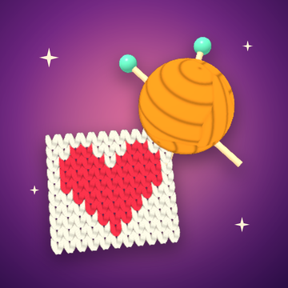

Yün Atölyesi
Renkli yumakları doğru sırayla şişlere gönder, ilmek ilmek gerçek bir resim ör!
Sort the yarn, knit the picture – a relaxing knitting puzzle for iPhone.

Renkli yumakları doğru sırayla şişlere gönder, ilmek ilmek gerçek bir resim ör!
Sort the yarn, knit the picture – a relaxing knitting puzzle for iPhone.